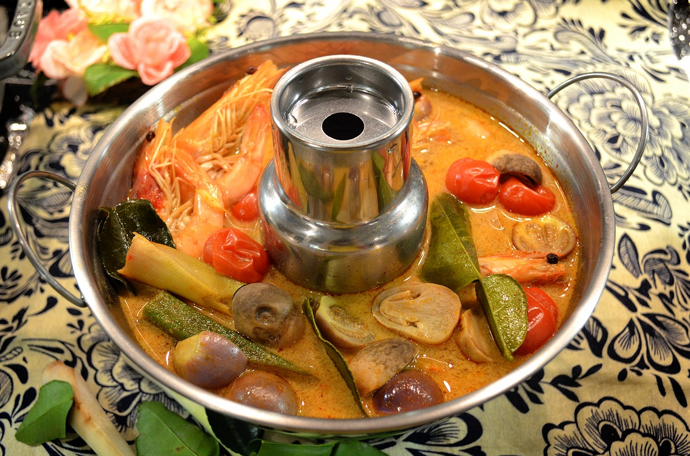

文化
泰國傳統的心臟地帶圍繞著湄南河的肥沃平原，發展出許多知名的泰國佳餚，最早，古代的素可泰王朝首都相較之下比較簡單，主要以到處豐收的米食為主，新鮮 的魚類、本土種類的大蒜、鹽、黑胡椒及魚露。在大城王朝時期統治的四世紀，又加入了更多複雜的原料。其中最重要的包括當時從南美產的辣椒，其他主要產品包括香菜(胡荽)、萊姆及蕃茄等。
特色
泰國中部美食：多地飲食文化融合
泰國北部美食：偏愛各式糯米飯
泰國東北部美食：重口味食物才是最愛
泰國南部美食：新鮮海產豐富
菜餚
冬蔭功湯 Tom Yum Soup
泰國船麵 Boat Noodles